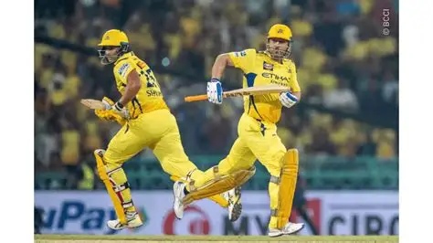
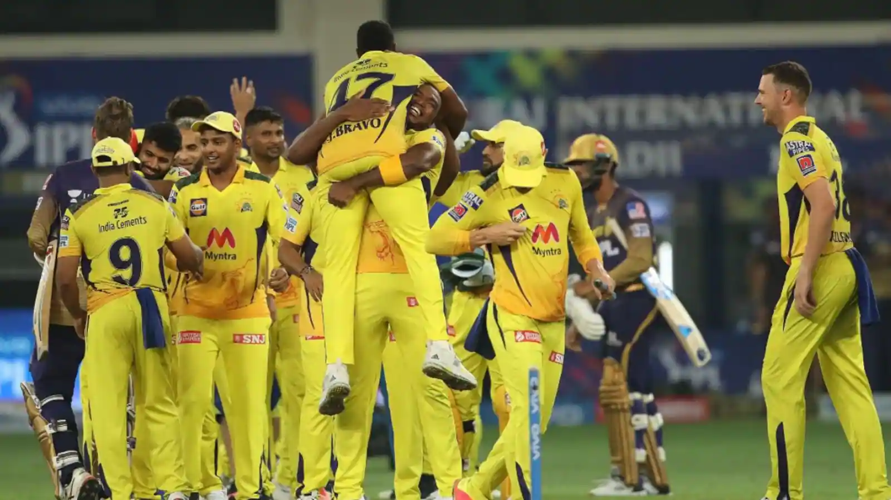
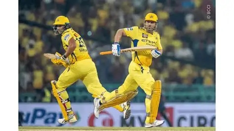
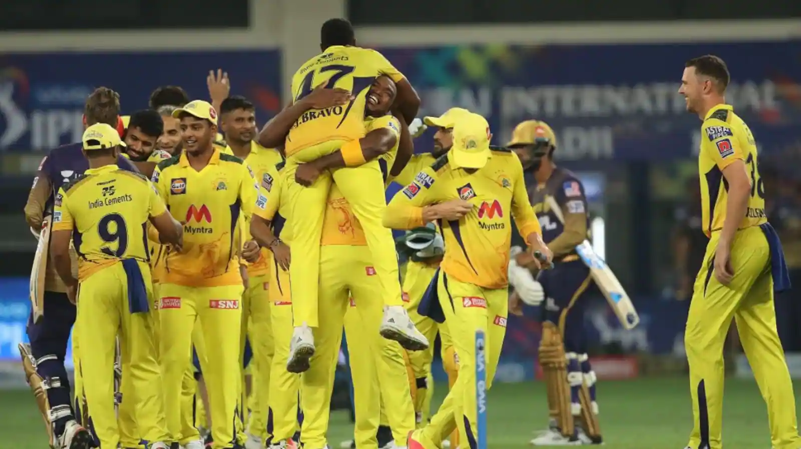

Why CSK is a Favourite team 💛
Chennai Super Kings is not just a cricket team — it is an emotion for millions of fans across India. CSK has built a legacy of consistency, loyalty, and calm leadership.
One of the biggest reasons for CSK’s popularity is the legendary captain MS Dhoni, whose composed mindset and match-finishing abilities have won countless hearts over the years.
Unlike many franchises, CSK believes in stability and long-term team bonding. The franchise supports its players during tough phases, which creates strong team chemistry and trust.
The electrifying atmosphere at Chepauk Stadium and the iconic “Whistle Podu” slogan make CSK one of the most passionately supported teams in IPL history.


 


